I already had the Arduino IDE installed but needed to update it to the latest version, 2.3.7. I was having trouble with Sparkfun Appollo3, but I found where to place the third party board managers in the photo below.
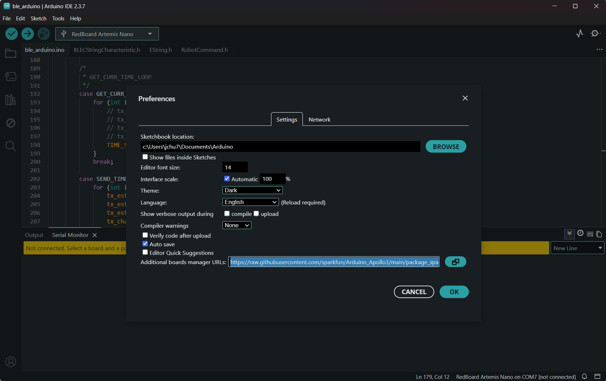In this prelab, I checked which Python version I was using, and it was 3.12.3. In my FastRobots_ble directory, I made a virtual environment for it, activated it, and used pip to install all the necessary Python packages. After that, I started Jupyter lab from my terminal with the venv still activated. I read through the codebase and then installed ArduinoBLE in the Arduino IDE. In the Arduino IDE, I burned the ble_arduino.ino sketch onto my connected Artemis board, and as you can see in the start of the video above, it printed the mac address: c0:81:b5:24:3:64. After that, I read through the Bluetooth library code summary.
This Bluetooth library provides the Python and Arduino code that allows my computer and the Arduino to communicate over BLE (Bluetooth Low Energy). Using the RobotCommand class, commands are sent as formatted strings and parsed on the Artemis. The handle_command() function uses a switch statement to execute the appropriate action based on enumerations of variables in CommandTypes like "PING" and "SEND_TWO_INTS".
I updated the artemis address to the one printed out by my Artemis in the prelab. At the end of demo.ipynb, I made a new cell with to generate a new UUID, which I then used to replace the BLEService UUID and the old UUID within connection.yaml. I then ran through all of the cells in the demo.ipynb notebook.
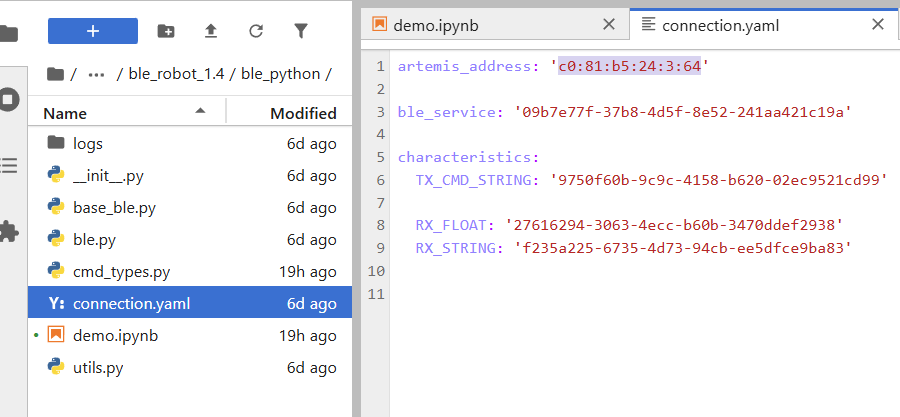 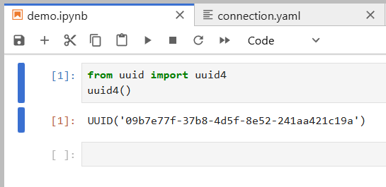The echo command modifies the original message sent to it in the data and returns a modified version.
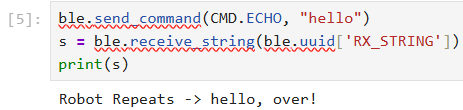The SEND_THREE_FLOATS command tells the board to print out the 3 floats from the data in the command in the serial monitor. Each float is delimited by '|'.
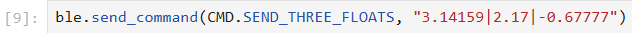 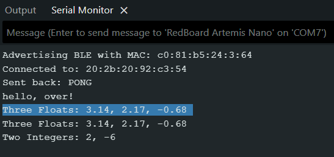The GET_TIME_MILLIS command tells the board to get the current time of the running board in milliseconds. This is done via the millis() function which returns the current time. Each float is delimited by '|'.
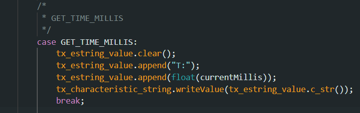 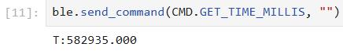The notification handler automatically calls the callback function which receives a string GATT characteristic and prints it out. This lets me avoid having to manually receive and print out the strings like in the ECHO command snippet above.
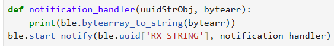This command does 100 iterations and gets the current time and transmits it back in each iteration to the computer. From the first time to last, 2352 ms passed by. This means that each time stamp was sent in around 23 ms which is around 43 messages a second. Each message was 12 characters and each character is a byte. This means that the data transfer rate was 43 * 12 = 512 bytes per second.
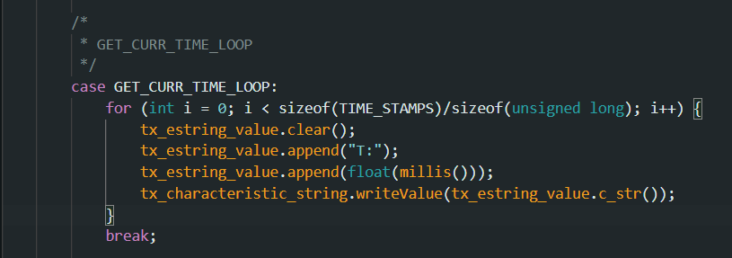This command now adds the current time stamps to an array. When I call the SEND_TIME_DATA command to loop through the array, it shows that 10 ms passed between the first and last elements. This means it took 0.1 ms each. Each message was 12 characters and each character is a byte. This means that the data transfer rate was 120 bytes per ms.
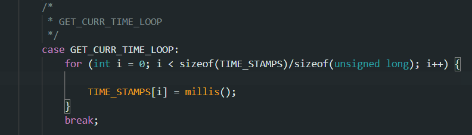 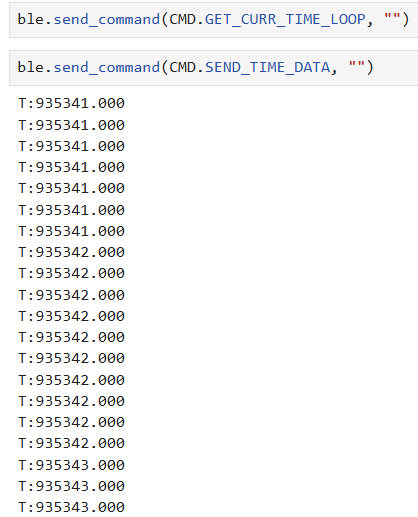This command now adds the temp readings that pair with the time stamps. I modified GET_CURR_TIME_LOOP to collect analog temperature readings at the same time it got the current time in milliseconds. I used the Apollo3 example sketch, Example02_AnalogRead, for the temperature readings
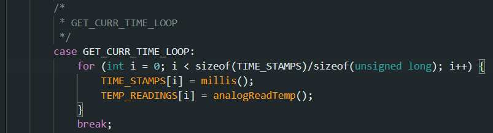 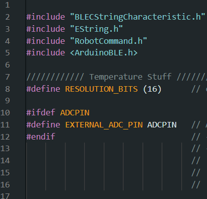 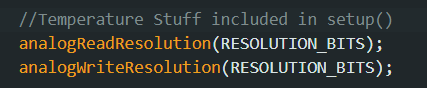 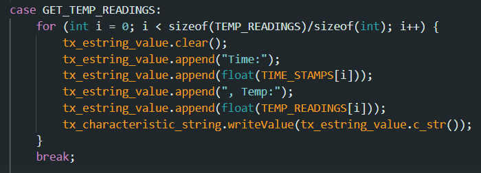 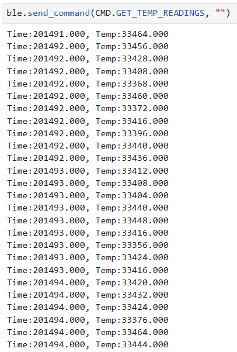The first method streams timestamps to my computer in real time, which is simple and useful for live feedback but this is slower which means a lower effective data rate. The second method stores the timestamps and temperature readings in arrays on the Artemis and sends them later. This allows data to be recorded much faster since it is limited mainly by sensor reads and memory access rather than BLE. This second logging method is better for high-rate data collection and more reliable timing, but it is not real time and is held back by available RAM. With only 384 kB of memory and about 8 bytes per timestamp/temperature pair, the Artemis can store tens of thousands of samples before sending them.
I learned a lot about the BLE library and how to interact with it from my computer. I ran into some problems understanding what some of the tasks were asking for, but I eventually figure it out. I faced a lot of minor errors with not properly updating the command enumerations on both the Arduino and my computer.